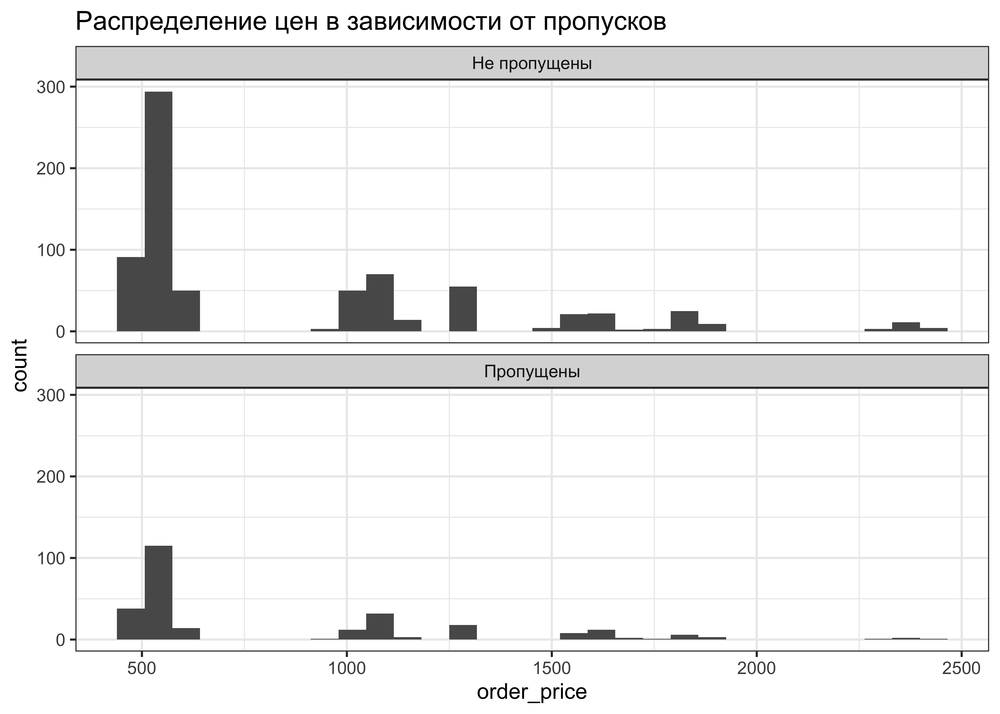

Вечером 25 марта 2025 года система доставки пиццы в Дашборге дала сбой: заказы пропали, курьеры остались без маршрутов, а клиенты — без ужина. Это не случайность, а преднамеренное вмешательство.
Давайте выясним, что случилось, восстановим данные, найдем предполагаемого злоумышленника и распределим компенсацию 90000 рублей пострадавшим пользователям.
Важно
Решение на этой странице не обновлялось после дедлайна, можно ознакомиться с решением в pdf по ссылке
Восстановление данных
Частично восстановленные данные есть по ссылке, таблицы orders и device.
Начнем с загрузки данных и посмотрим на структуру данных.
ip device operator_ip user_id
<char> <char> <char> <num>
1: 192.168.66.187 unknown 192.168.215.115 102475
2: 192.168.100.221 mobile 192.168.203.103 218841
3: 192.168.100.221 mobile 192.168.202.102 521065
4: 192.168.100.221 web 192.168.212.112 106146
5: 192.168.100.221 mobile 192.168.217.117 854950
6: 192.168.100.221 web 192.168.209.109 263835
Подсчитаем, сколько значений было пропущено и в каких столбцах
colSums(is.na(orders))
order_id order order_price user_id
0 269 0 0
colSums(is.na(device))
ip device operator_ip user_id
0 0 0 0
У нас есть пропущенные значения в составе заказа (поле order), которые нужно восстановить. Мы можем восстановить цену отдельных пицц, используя существующие заказы, где в составе только одна пицца и указана цена заказа.
single_item_orders <- orders %>%filter(!str_detect(order, ", ")) %>%# Нет запятой с пробелом - одна позицияdistinct(order, order_price)single_item_orders %>%arrange(order_price)
Таким образом, удалось восстановить цену на отдельные пиццы, и почти все имеют разную цену, только Пеперони и Неаполитанская стоят одинаково (530). Следовательно, восстановить заказы, где в составе есть пицца по такой цене мы не сможем полностью, напишем, что это Пеперони или Неаполитанская.
Восстановим пустые заказы с помощью комбинаторики, используя цены для отдельных пицц, перебирая известные цены, пока комбинация не сойдется.
find_combination <-function(target_price, prices, items, max_items =4) {# Создаём список комбинаций для разного числа элементов (от 1 до max_items) и объединяем все комбинации в один список all_combos <-map(1:max_items, ~combn(prices, .x, simplify =FALSE)) %>%flatten() matched_combos <-keep(all_combos, ~sum(.x) == target_price) %>%map(sort) %>%unique()# Преобразуем каждую комбинацию цен в соответствующие элементы matched_items_list <-map(matched_combos, ~{ matched_prices <- .x matched_items <- items[match(matched_prices, prices)]paste(matched_items, collapse =", ") })# Объединяем все комбинации через ИЛИreturn(paste(matched_items_list, collapse =" ИЛИ "))}# запускаем только для тех строк, где пропущен состав заказаorders[is.na(order), order_recovered :=map_chr(order_price, find_combination, prices = single_item_orders$order_price, items = single_item_orders$order)] %>% .[, order_recovered :=coalesce(order, order_recovered)]# теперь заменяем Пеперони или Неаполитанская везде, где мы восстановили заказ на Пеперони/Неаполитанскаяorders[str_detect(order_recovered, 'Пеперони|Неаполитанская') &is.na(order), order_recovered :=str_replace(order_recovered, 'Пеперони|Неаполитанская', 'Пеперони/Неаполитанская')]# проверим, сколько осталось пропущенных значений:sum(is.na(orders$order_recovered))
[1] 0
# запишем это в файлwritexl::write_xlsx(orders, 'data/orders_recovered.xlsx')
Данные восстановлены, почти всё, кроме наличия в составе Пеперони и Неаполитанской удалось восстановить точно. Кроме этого, некоторые заказы допускают несколько комбинаций, они указаны через ИЛИ в поле order_recovered, например в заказе с ценой 1549, с такой ценой могут быть Маргарита, Вегетарианская, Дьябло ИЛИ Четыре сыра, Гавайская, Пеперони/Неаполитанская.
По ссылке можно ознакомиться с восстановленными данными (или здесь, альтернативно на случай проблем с доступом).
Определить злоумышленников
Построим распределение цен по заказам, чтобы понять, есть ли какой-то паттерн в пропущенных значениях в зависимости от цены.
orders %>%mutate(is_missed =if_else(is.na(order), 'Пропущены', 'Не пропущены')) %>%ggplot(aes(order_price))+geom_histogram()+facet_wrap(~is_missed, nrow =2)+ggtitle('Распределение цен в зависимости от пропусков')+theme_bw()

Определенного паттерна не наблюдается, пропущенные заказы имеют схожее распределение по цене с существующими.
Распределение по устройствам тоже не дает определенной информации, встречаются устройства mobile, unknown и web с примерно одинаковой частотой.
device %>%count(device)
device n
<char> <int>
1: mobile 359
2: unknown 323
3: web 318
Давайте посмотрим на распределение ip по таблице device.
Сначала проанализируем диапазон ip.
device %>%summarise(min(ip), max(ip))
min(ip) max(ip)
1 192.168.1.122 192.168.99.220
Диапазон ip в датасете от 192.168.1.122 до 192.168.99.220, что говорит о том, что все ip внутренние, а значит заказы обрабатываются через внутреннюю систему. Другая гипотеза, что для кейса замаскированы реальные ip. Рассмотрим вариант, в котором это будут действительно внутренние ip, через которые проходит заказ.
Анализ частоты встречаемости ip-адресов пользователей
Найдем топ-10 самых часто встречающихся ip в таблице
order_id order user_id ip
<num> <char> <num> <char>
1: 1 3 пиццы 653310 192.168.47.168
2: 2 Дьябло 790532 192.168.47.168
3: 3 Вегетарианская, Неаполитанская, Дьябло 643164 192.168.47.168
4: 4 Гавайская 262399 192.168.47.168
5: 5 Пеперони 554538 192.168.47.168
device operator_ip
<char> <char>
1: mobile 192.168.214.114
2: unknown 192.168.213.113
3: mobile 192.168.207.107
4: web 192.168.207.107
5: web 192.168.214.114
Обращаю внимание, что все order_id с этого ip-адреса идут по порядку, с 1 по 222, и затем заказ под номером 586, но при этом айди пользователя разные и попадают на разные operator_ip.
Самый часто встречающийся user_id с таким ip - это 796365, у которого 5 заказов. Это может указывать на возможный источник атаки. Стоит посмотреть, какие заказы были раньше у этого пользователя, так как если это новый пользователь, то возможно потенциальный кандидат на взломщика.
Допущение такое, что все заказы с одного ip - это действительно заказы с одного ip-адреса (а не условность кейса), что делает подобную частоту заказов с одного адреса подозрительной. Это похоже на намеренную перегрузку системы, что могло вызвать сбой.
Проверим следующий часто встречающийся в данных ip адрес: 192.168.27.148.
Самый часто встречающийся юзер с этого айпи: 853594, 5 заказов, рекомендации такие же как и для пользователя 796365 — проверить предыдущие заказы на аномальность данных.
Подозреваем, что два ip 192.168.47.168 и 192.168.27.148 устроили атаку, если это внутренний айпи, то стоит отследить, что это за устройство и кто имеет к нему доступ, посмотреть записи с камер наблюдения.
Однако, если проанализировать остальные айпи пользователей из топ-10 встречающихся, то у них тоже заказы идут по порядку, что может указывать на нормальную работу системы. Нужно больше данных, чтобы сравнить, как это происходит в обычные дни без сбоя, чтобы понять, является ли это чем-то аномальным.
Анализ совпадений пользовательских ip и операторских
Еще можно посмотреть на совпадающие ip-пользователей и операторов.
device[ip %in% operator_ip, ]
ip device operator_ip user_id
<char> <char> <char> <num>
1: 192.168.91.212 mobile 192.168.207.107 307937
2: 192.168.91.212 web 192.168.215.115 307937
3: 192.168.46.167 mobile 192.168.213.113 363028
4: 192.168.46.167 web 192.168.209.109 363028
5: 192.168.46.167 unknown 192.168.211.111 363028
6: 192.168.85.206 web 192.168.212.112 532741
7: 192.168.85.206 mobile 192.168.203.103 532741
8: 192.168.85.206 web 192.168.207.107 532741
Здесь айпи адреса 192.168.91.212, 192.168.46.167, 192.168.85.206, которые встречаются и в пользовательском айпи, и в айпи оператора. Это тоже подозрительно и указывает на потенциальный взлом. Устройство одновременно клиент и оператор для разных заказов, такое может быть, например, в случае взломанного терминала. Хотя оставляем вероятность, что сотрудник пиццерии заказал пиццу с рабочего устройства :)
Соответственно, наиболее подозрительные ip это 192.168.47.168 и 192.168.27.148, по критерию наиболее частотных заказов и 192.168.91.212, 192.168.46.167, 192.168.85.206 по критерию одинаковых пользовательских ip и ip оператора. Все похоже на внутреннюю атаку, и рекомендация посмотреть также камеры видеонаблюдения и логи сотрудников, которые имеют доступ к подозрительным адресам.
Распределение компенсации пострадавшим
Предполагаем, что настоящие пользователи, которые пострадали, не с вышеуказанными айпи.
У нас есть 90000р, чтобы распределить между настоящими пострадавшими. Думаю, стоит это сделать пропорционально сумме заказов.
Отфильтруем пользователей, кто не заказывал с подозреваемых ip адресов, оставим только уникальные заказы.
Оставшуюся сумму (390) распределим так, чтобы округлить в большую сторону тех, кого на предыдущем этапе округлили в меньшую, и чтобы в сумме компенсация получилась ровно 90000.
Сумма получилась ровно 90000, пропорционально сумме заказа и с округлением до кратных 10 чисел. Полученную компенсацию можно зачислить на бонусный счет клиента или выплатить в виде промокода (но бонусный счет лучше).
Данные можно найти здесь или здесь, они одинаковые.
Выводы:
Данные по заказам восстановлены, находятся по ссылке здесь
Есть подозреваемые злоумышленники, с ip-адресов 192.168.47.168, 192.168.27.148, 192.168.91.212, 192.168.46.167, 192.168.85.206, но нужно больше информации, чтобы сделать более точный анализ
Компенсация по пользователям в размере 90000 распределена, в зависимости от цены заказа и рекомендовано зачислить на бонусный счет в приложении. Подробнее можно ознакомиться здесь
Надеюсь, это решение поможет восстановить справедливость и порядок в Дашборг :)